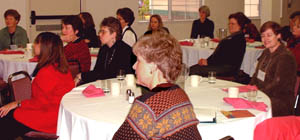

| Saturday, Sept. 22, 2001 | Membership Brunch 9:30 a.m. to noon at Kat Hughes' home. 6227-204th Dr NE, Redmond. Call Kat for directions and what dish to bring. |
| Fall | EYH planning meeting. Get involved with this conference which encourages girls in math, science and technology. Watch the newsletter for more info. |
| Saturday, Oct. 6, 2001 | North Puget Sound Every Member Conference from 8:30 a.m. to 3:30 p.m., Thinking in the Future Tense, at First Lutheran Church, Bothell. |
| Wednesday, Oct. 10, 2001 | Branch Meeting from 7-9 p.m. Atieno Kombe & Jack Danforth will speak on Urgent Africa, a non-profit dealing with HIV/AIDs in Africa at the Redmond Library. |
| Wednesday, Nov. 14, 2001 | Branch Meeting from 7-9 p.m.. Member Rachel Knight will give a financial education presentation. Location: Kirkland Library. |
| Wednesday, Dec. 12, 2001 | Holiday Party & Scholarship/EF/LAF Fund-raiser from 6:30-9 p.m. A new program of donations, food and fun at Peggy Ostranders home: 9 Bridlewood Circle, Kirkland. |
| Saturday, Jan. 19, 2002 | Branch Brunch from 9:30 a.m. to noon. Author Georgie Kunkel will speak on the history of the womens movement in the Northwest. Location TBA. |
| Thursday, Feb. 28, 2002 | Branch Meeting from 5:00-8:30 p.m. Joint meeting with other branches & organizations at the Bellevue Art Museum. Living Voices will give a presentation on Japanese American internment experiences. |
| Wednesday, Mar. 20, 2002 | Branch Meeting 7-9 p.m. at Park Place Books. Adelante! book reviews presented by Book Group. Current and past Adelante book lists may be found on the Internet at: http://www.aauw.org/7000/adelante or call the Book Group leader for information. |
| Wednesday, Mar. 27, 2002 | High School Expanding Your Horizons Conference to encourage young women in math, science and technology, at Bellevue Community College. |
| Saturday, Mar. 30, 2002 | Middle School Expanding Your Horizons Conference to encourage girls in math, science and technology through exposure to women working in these fields, at Bellevue Community College, from 8 to 11:50 a.m.. |
| Wednesday, Apr. 10, 2002 | 6:30 - 9:00 p.m. Branch Meeting. Reception to recognize our scholarship recipient and honor other deserving students, followed by a business meeting. Location to be announced. |
| April 19-21, 2002 | AAUW Washington State Convention, Tacoma, WA. |
| Wednesday, May 15, 2002 | Dinner Meeting 6:30 - 9:00 p.m. Our own Kris Swanson will give a humorous presentation at our annual dinner. Location to be announced. |
| Thursday, June 20, 2002 | Informal Branch Meeting. Explore the Bellevue Art Museum on this free night and have coffee afterwards across the street. |
| Date | Title | Location |
|---|---|---|
| September 25 | All We Know of Love by Katie Schneider | Carolyn Hayek's |
| October 23 | Strangeness of Beauty by Lydia Minatoya | Bev Hastig's |
| November 27 | Blackberry Wine by Joanne Harris | Karen Peters' |
| December 18 | Plainsong by Kent Haruf | Debbie DeYoung's |
| January 22 | A Widow For One Year by John Irving | Evette Norton's |
| February 12 | Prodigal Summer by Barbara Kingsolver | Audrey Fellinge's |
| March 20 | Adelante! Selections | Parkplace Books at 7 p.m. |
| April 23 | Bonesetter's Daughter by Amy Tan | Carol Rangaram's |
| May 28 | Last Report on the Miracles at Little No Horse by Louise Erdrich | Arlene Vollmer's |
| June 25 | Bee Season by Myla Goldberg | Kris Swanson's |